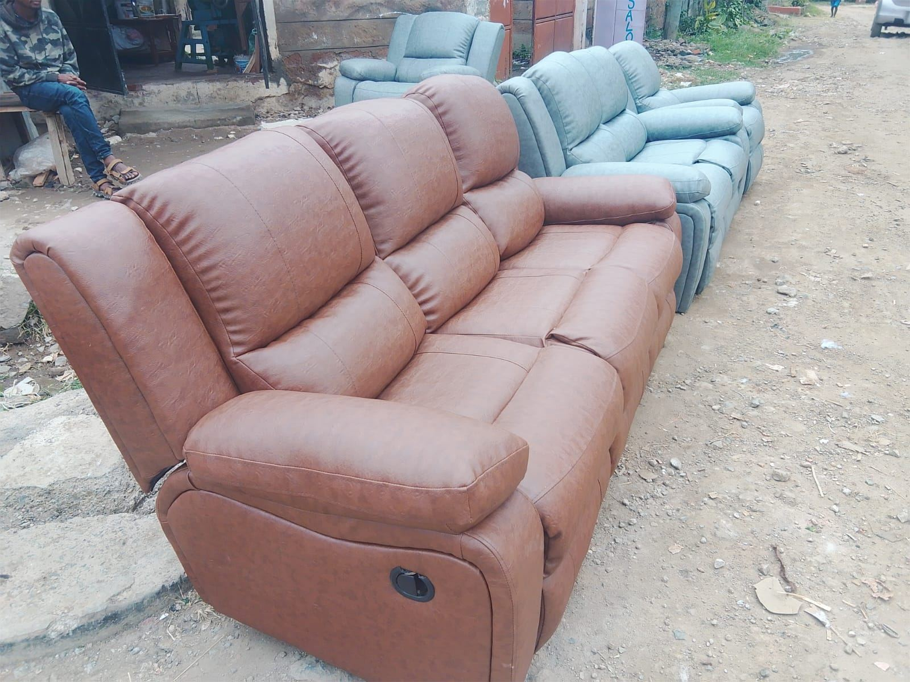
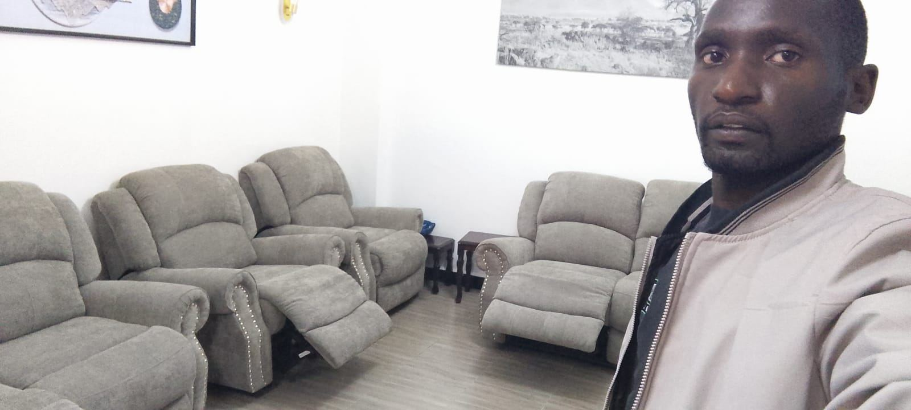
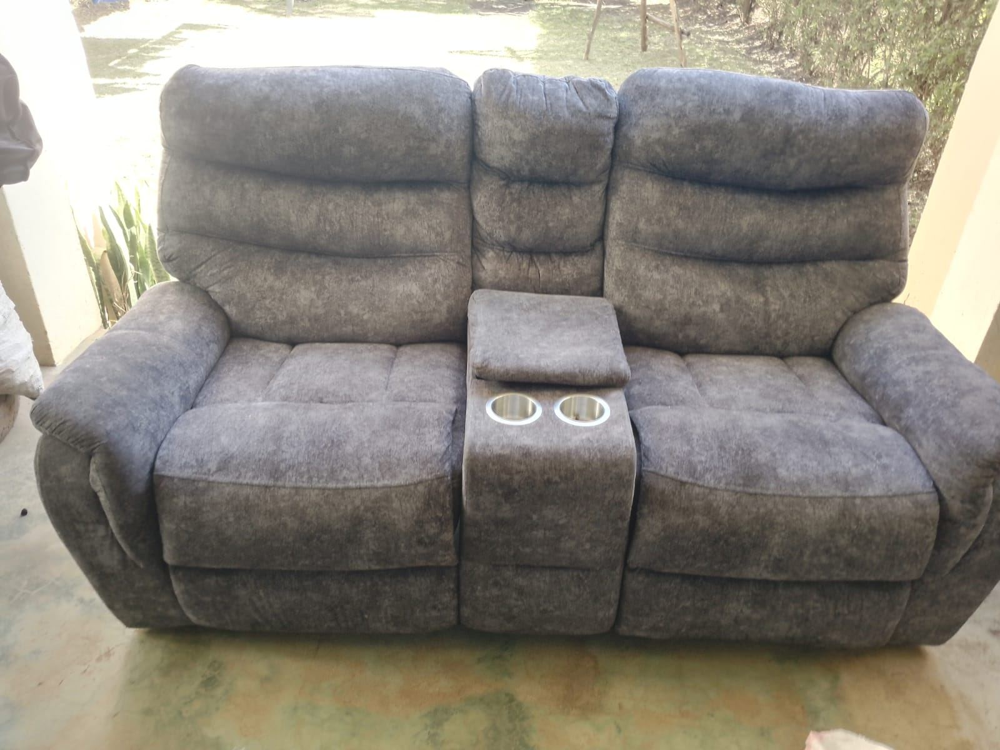
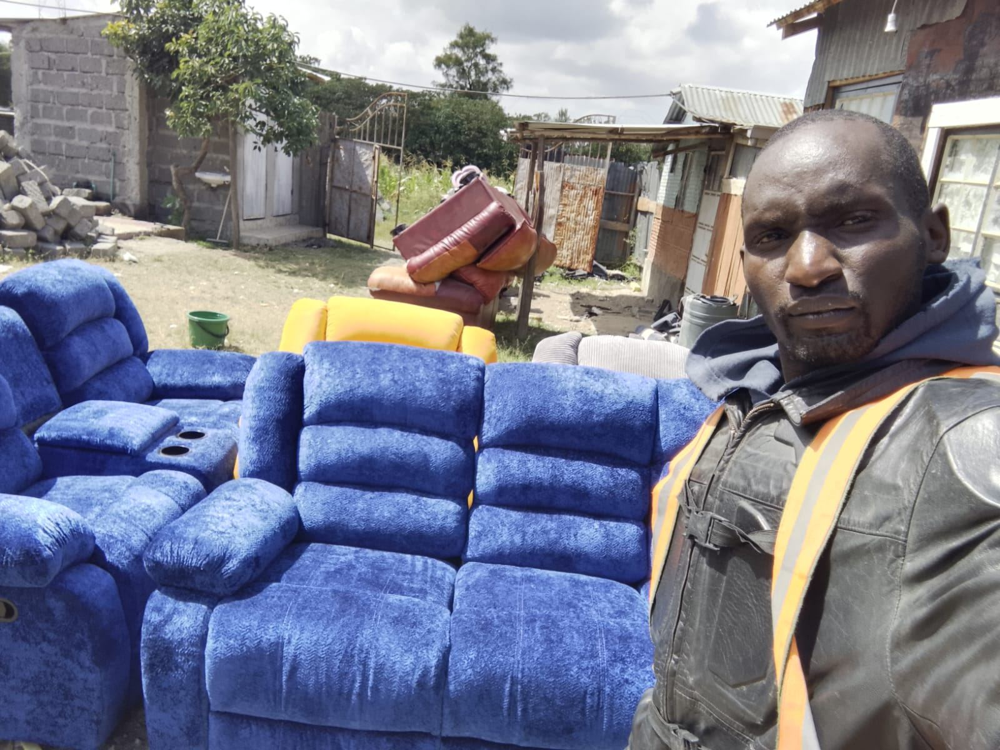
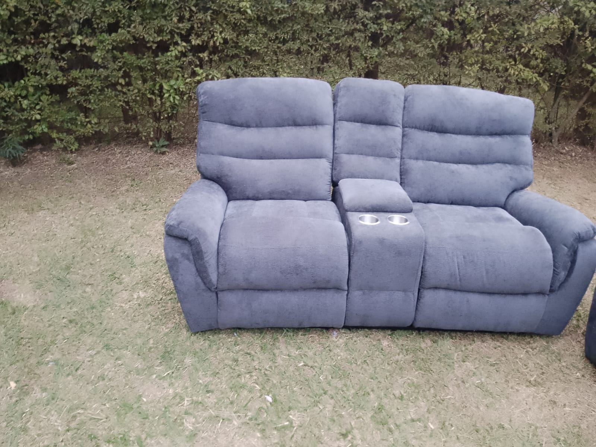
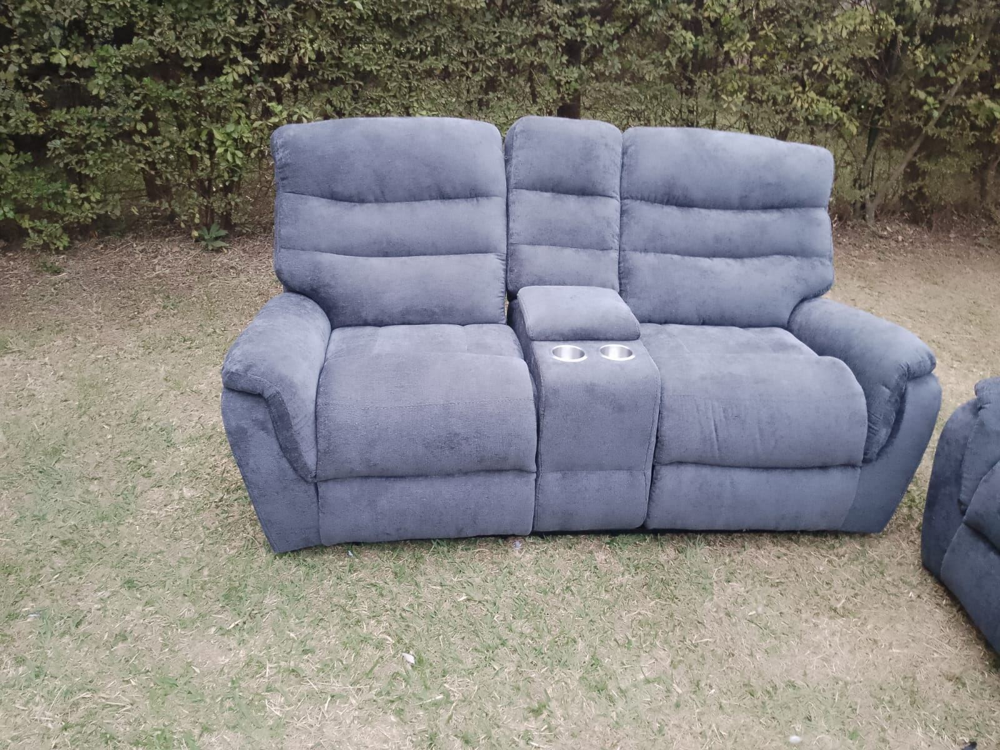
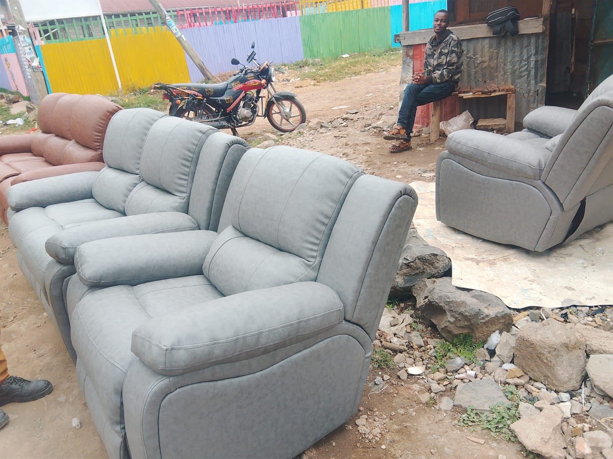
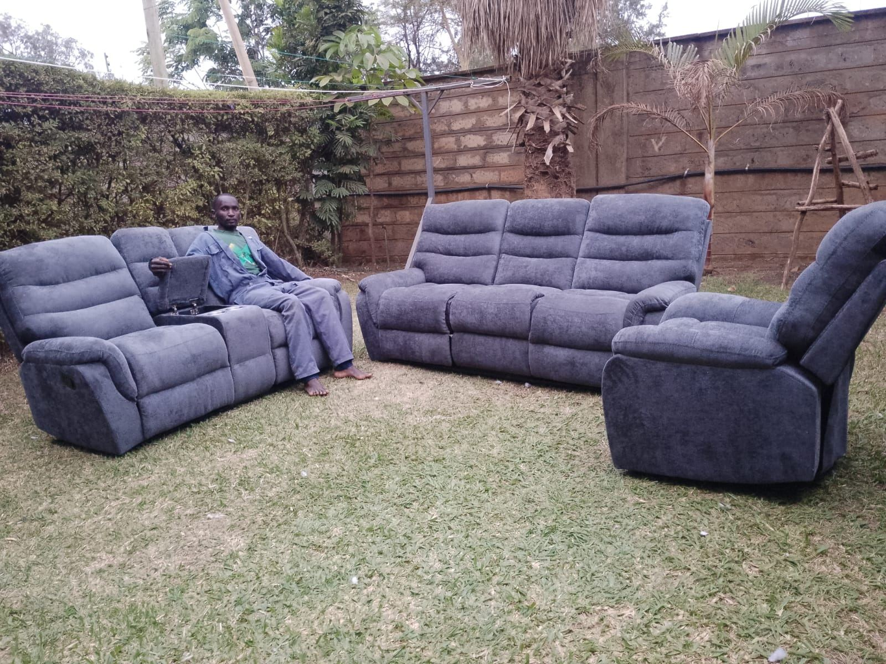

Repair · Upholstery · Comfort Restored
Your Recliner Deserves
A Second Life
Torn leather, a stuck recline mechanism, tired old fabric — Mumo Recliner Repair Experts brings comfort back to your sofas and recliners with honest craftsmanship, from a single armchair to a full living room set.
What We Do
Full Recliner & Sofa Care, Start to Finish
From a single squeaky recliner to reupholstering an entire living room set, we handle it with the same attention to detail.
Recliner Mechanism Repair
Stuck, squeaky or broken recline mechanisms diagnosed, fixed and tested before we hand your chair back.
Reupholstery & Fabric Change
Give a tired sofa a brand-new look. Choose from a wide range of leather, chenille and suede fabrics.
Torn & Damaged Leather Repair
Seamless patching and stitching that restores the original look of scuffed or torn leather seats.
Full Sofa Set Restoration
3-seater, 2-seater and single recliner sets refreshed together, so every piece matches perfectly.
Cushion & Foam Replacement
Sagging, worn-out seats firmed back up with fresh foam and padding for lasting comfort.
Free Assessment & Delivery
Send a photo or have us take a look, get an honest quote, and we deliver once the work is done.
Our Work
Real Repairs, Real Results
A look at recliners and sofas we've restored, reupholstered and delivered back to happy homes across Kenya.











Why Choose Mumo
Craftsmanship You Can Trust
-
Skilled hands, careful craftsmanship
Every stitch, staple and seam is done with attention to detail, not shortcuts.
-
Wide fabric & leather selection
Match your existing decor or go bold with a completely new look.
-
Fair, upfront pricing
You get a clear quote after assessment — no surprise costs once the work is done.
-
Full sets or single pieces
Whether it's one recliner or an entire living room suite, we handle it end to end.

How It Works
From First Message To Comfort Restored
Reach Out
Call or WhatsApp us with a photo of your recliner or sofa and what needs fixing.
Get a Free Quote
We assess the damage or fabric needs and give you an honest, upfront price.
We Get To Work
Repair, reupholstery or mechanism fixing carried out by skilled hands.
Comfort Restored
Your furniture is delivered back looking sharp and feeling brand new.
Get In Touch
Let's Restore Your Recliner
Send us a photo of your furniture on WhatsApp for a fast, free quote — or give us a call.